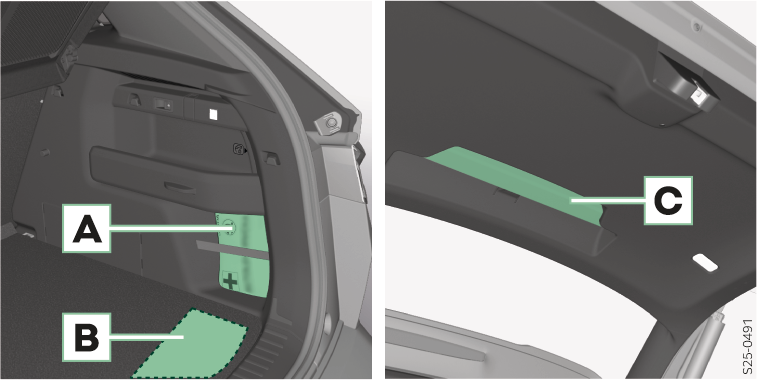
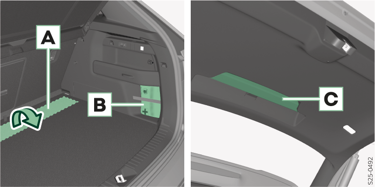

Emplacement de l’équipement de médecin urgentiste dans le coffre à bagages

- A
Trousse de premiers secours
- B
Outillage de bord
- C
Triangle de présignalisation

- A
Outillage de bord
- B
Trousse de premiers secours
- C
Triangle de présignalisation

Pour un accès plus facile à la trousse à outils, rabattez les sièges arrière vers l'avant et retirez ou insérez l'outil de la zone du siège arrière.
Retirer le triangle de pré-signalisation
Appuyer sur le bouton de déverrouillage et retirer le triangle de pré-signalisation.
Compartiment de rangement pour la veste réfléchissante
Le compartiment de rangement pour la veste réfléchissante se trouve dans le compartiment de rangement de la porte avant et arrière.